Circuit concepts¶
Overview¶
It has been argued by historian Robert J. Gordon that the period of US history between the Civil War and World War II was the era of the greatest technological change ever. In 1865, a vast majority of Americans lived on the farm, with little indoor plumbing or home applicances of any kind, and food was almost all provided locally, from neighboring farms. Cars and modern medications did not exist. Seven decades later, the average American’s life was completely different. By this time, a large portion of the population lived in cities, with indoor plumbing, cars, radio, telephones, along with the beginnings of air travel and television. As one person has said, you and I could walk into a 1940 apartment and feel a familiar atmosphere (perhaps some annoyance at no internet!), but feel disgust and horror in a house of 1870 – for example, no bathroom to wash off the horse manure our feet picked up walking in from a muddy street.
One big component of this change is the electricification of the nation. As the 19th century turned into the 20th, there was a great effort to string electric lines across the US, giving access to electric power and the many appliances dependent on that. Think about how little you can do during those rare power outages, and how much of your life is based on the flow of electric charge into your house. Electricity is now a critical part of our technological civilization.
The next few lessons will deal with some aspects of these electric circuits. The current lesson will set the stage, by defining the idea of electric current, resistance, and voltage. Here, we will also talk about the concepts of “circuit elements” (devices in an electric circuit) either being in “series” or in “parallel”. Once these basic ideas are understood, Lessons 31 and 32 will look at electric circuits made of resistors. The resistor circuits of Lesson 31 will be those described completely in terms of series or parallel resistors; Lesson 32 will explore how to analyze more complicated circuits. Finally, Lesson 33 will introduce the electric capacitor, a circuit element with both like and unlike a battery. From this, we can then look at capacitor circuits, along with RC circuits – circuits containing both resistors and capacitors.
Here are the objectives for this lesson:
Define (electric) current and identify its units.
Define a resistor.
State Ohm’s law.
Calculate the power emitted by a circuit element.
State Kirchhoff’s junction and loop rules.
Identify when two or more circuit elements are in series, or in parallel.
Circuit elements, current, and voltage¶
Before we get into the concepts of electric circuits, it may help to introduce some basic terms we will use throughout our discussion. As you read through the various explanations below, you may want to keep in mind an idea called the hydraulic analogy. This is just a fancy way of saying that you can understand many of the concepts in electric circuits by imaging the flow of water in a river! I will use this analogy in various points in the lesson.
An electric circuit consists of circuit elements connected by wires such that there is a closed path through all the wires and circuit elements. In other words, from any given point in the circuit, it is possible to move through the circuit, passing through different elements and wires, and eventually return to the starting point. Some examples of circuit elements we will study are resistors, batteries, and capacitors, but this does not exhaust the possibilities. Resistors and batteries will come up later in this lesson; we will discuss capacitors in Lesson 33.
Because there are closed paths in the circuit, electric charge can move along these paths, repeatedly passing through the circuit. Electric current is the name for this flow of charge through a circuit; the analogous situation for water is the flow rate, so many cubic meters of water moving per second through pipes or a river.
Quantity: electric current \(I\)
Units: amperes or amps (A) = coulombs/sec
Definition: $\( I = \frac{\Delta Q}{\Delta t} \)\( where \)\Delta Q\( is the amount of positive charge that passes by a particular location in a time interval \)\Delta t$.
One important thing to note is that current usually refers to the motion of positive charge by convention. Thus, such current is referred to as conventional current. You may wonder why we use the motion of positive charges, when we know that it is actually negative electrons that are flowing through the copper wires in our houses. It turns out that there are a few reasons for this:
The basic reason that electric current flows through a circuit is that an electric field is created inside the wire. Since positive charges would feel a force in the same direction as this field, it is natural to just use the flow of positive charge as the definition of current.
I hinted at another reason, though, when I said that “we know” that electrons flow through the circuit. But the first understanding of electric circuits was developed over 150 years before the discovery of the electron – think of Benjamin Franklin and his kite! It took many years to understand what the flow of charge was made of. Some thought that there were two fluids moving through the wires, one we would call positive and the other negative. It was Franklin, in fact, who proposed there was only one type of flow, and started using the names “positive” and “negative”. Unfortunately, he called what we now describe as the electron as a negative charge. If you don’t like the fact that conventional current moves in the opposite direction to the flow of electrons, blame Benjamin Franklin!
So, why is it necessary to have a complete path through the circuit? What makes charges flow in the circuit is the presence of an electric field inside the wires and circuit elements. This field is created by an energy source, such as a battery. The electric field created by the battery or other device is actually a little different than the ones we saw in Lesson 29, since the field lines actually form closed loops. In other words, they do not start and stop at the charges in the circuit, but instead provide the necessary force for them to move.
Charges need a source of energy to move through the circuit. The charges flow between two points because there is a difference in electric potential energy \(U_{elec}\) between the points. However, the size of \(U_{elec}\) depends on the size of the charges involved, so it is more convenient to speak instead of electric potential \(V\) (not potential energy!), which is the amount of electric potential energy per charge. This is a lot like the electric field \({\vec E}\) being the amount of electrostatic force \({\vec F}_{elec}\) per charge, or \({\vec E} = {\vec F}_{elec} / q\). Thus, \(\Delta V = \Delta U_{elec} / q\), where \(\Delta V\) does not depend on the size of the charges moving in the circuit. When electricity was first being studied in the 18th and 19th century, it was helpful to speak of electric potential without worrying what the charges actually were!
Another term for this potential difference, and the one we will predominantly use, is voltage. It should be given as “\(\Delta V\)”, but we often write it as simply \(V\). Remember, though, that \(V\) is a difference between two points, not at a single point. Thus, we speak of voltage across a circuit element, not “at” or “through” the element. Voltage is necessary for current to move; if there is no voltage difference between two points in a circuit, then there is no electrostatic force on the charges to make them move.
Quantity: voltage \(V\) (or \(\Delta V\))
SI units: volts (V) = joules/coulomb
Voltage does not flow! I often hear students talk about “voltage flow”, but voltage is not the flow of anything – it is what creates the flow of electric charge. Go back to the hydraulic analogy: the flow of water over a waterfall is due to the height difference between the top and bottom of the cliff. Height doesn’t flow, water does! It’s the same for electricity: voltage doesn’t flow, charge does!
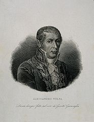
The battery was first developed by Alessandro Volta in the late 18th century, allowing for the first time continuous electric currents. Before this, electricity was studying using static electricity (like the shock you get from a metal object when in a warm, dry room). Early on, Volta’s invention was referred to as a “pile”, since it was literally a pile of metal disks, separated by paper saturated in acid. Obviously, the term “voltage” is named after the inventor.
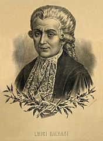
Volta built the first battery for an interesting reason. Another scientist, Luigi Galvani, believed in a form of “animal electricity”, where living creatures had their own form of electricity which animated their bodies. This belief came from experiments where frogs’ legs, hanging off a metal wire, would twitch when in contact with another metal wire. However, Volta did not believe this, so he invented the battery to show this was, in fact, the same form of electricity – current was flowing from one metal wire through the legs to the other, causing the twitching. However, animal electricity became more famous as the inspriration for the novel Frankenstein!
One way to think about what a battery does in terms of the hydraulic analogy is in terms of the shaduf, shown in the picture below. Used since ancient times, the shaduf is a basket attached to a pole, with a counterweight at the other end. Farmers can use this to scoop water from a lower level, raise it up, and pour it into an irrigation system at a higher level. This increases the gravitational potential energy of the water. Similarly, a battery takes a charge with a small electric potential energy, adds energy to it, and sends it along its way.
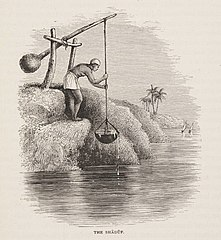
Often, we will use circuit diagrams as a means of circuit analysis. These diagrams are schematic pictures of a given circuit, where primary importance is placed on showing which circuit elements are connected by wires to others. If you’ve ever ridden on a subway, a subway maps is a similar device: it shows all the routes in the system, without worrying too much about whether the lines accurately represent the physical location of the rails. Thus, we can move around the lines in a circuit diagram, as long as we preserve the connections. As our first symbol for a device in such a diagram, we have the battery symbol shown below. The long and short lines are evocative of the early voltaic piles, but they now represent the high voltage (positive terminal, or long line) and low voltage (negative terminal, or short line) of the battery.
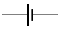
Ohm’s law¶
With Alessandro Volta’s invention of the voltaic pile (or battery), there was now a continuous source of electric current that could be used for further experiments. Francis Ronalds, one of the first electrical engineers, described the “intensity” and “quantity” for the battery, now known as the voltage and electric current, respectively. He later invented the first working telegraph, which later revolutionized world-wide communications.
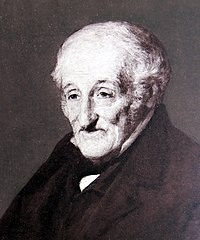
While a high school physics and mathematics teacher, Georg Ohm used a thermocouple – a device that converts heat into electric current – to comprehensively study the flow of electric charge through materials. Because he knew the temperature of the thermocouple, and could measure the current, he could find the relationship between the two for wires of various lengths, diameters and materials. This lead to the empirical relation now called Ohm’s law.

Despite the name, Ohm’s law is not a universal relation for all circuit elements. It is an experimental relationship between the current through \(I\), the voltage across \(V\), and the resistance of a circuit element. In particular, it says that $\( R = \frac{V}{I} \)$ Although it holds for a large number of materials, it is not always true; materials that do not obey Ohm’s law are known as non-ohmic, while those that do are obviously called ohmic.
Quantity: resistance \(R\)
SI units: ohms (\(\Omega\) or “capital omega”) = volts / amp
Note that Ohm’s law looks like the slope of a voltage vs. current graph. Unfortunately, it is usually the voltage that is the independent variable; the current flowing through a circuit is dependent on the choice of voltage across the circuit. Thus, you will more frequently see current vs. voltage graphs, so the slope is, in fact, the reciprocal of the resistance, or \(1/R\).
Problem: A piece of wire at a constant temperature is placed across a variable voltage source, and the current through the wire is measured. If the wire is ohmic, which of the following figures best represents its behavior as the voltage is increased?
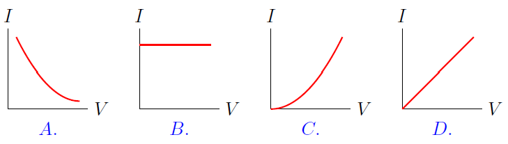
Obviously, the best example of a circuit device that has a resistance is a resistor. This could be anything in the circuit that takes electrical energy from the current flow, and outputs other forms of energy. For example, a space heater releases heat energy by passing current through a wire with a high resistance, while an incandescant light bulb emits light by the same method. The symbol for a resistor in an electric circuit diagram is shown below.
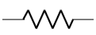
Problem: A simple circuit contains a 3.00 V battery and an unknown resistor. An ammeter placed in the circuit measures the current to be 0.400 mA. What is the resistance value of the resistor? Answer: 7.50 \(k\Omega\)
You can see how Ohm’s law works in the PhET simulation linked in the cell below. There, you can change the number of batteries in the circuit, which varies the voltage, or by altering the physical properties of the resistor, alterting the resistance. Either of these will induce a change in the circuit current.
from IPython.display import IFrame
IFrame(src="https://phet.colorado.edu/sims/html/ohms-law/latest/ohms-law_en.html", width="600", height="400")
Power¶
In Lesson 24, we talked about the conservation of energy, one of the most important conceptual tools in physics. Recall that mechanical energy stays the same whenever there are no non-conservative forces. However, such “frictional” forces do occur in electric circuits – a resistor, for example, is an element that converts electric energy into other forms. Thus, it is necessary to talk about the change in the energy as a function of time, or power. Note this could be either an increase or decrease of energy, depending on the situation. For example, a battery adds energy to the circuit, while a resistor takes it away.
Quantity: power \(P\)
SI units: watts (W) = joules/sec
Definition: $\( P = \frac{\Delta E}{\Delta t} \)$
This is the conceptual meaning behind power, but it does not help too much when dealing with electric circuits. Instead, it is more frequent to see power given as $\( P = IV \)\( You can remember this equation as "poison ivy". The reason it is true is that (1) current \)I\( gives the amount of charge moving through the device every second, and (2) voltage \)V\( gives the amount of energy per charge. Multiplying these two quantities together then gives the amount of electrical energy per time added to the circuit element. For ohmic devices, we can also use Ohm's law to replace either the current, \)\( P = \biggl( \frac{V}{R} \biggr) V = \frac{V^2}{R} \)\( or the voltage, \)\( P = I(IR) = I^2 R \)$
Example: The illegal toaster oven in your room has a resistance of 12.0 \(\Omega\) (the heating coils). Since it operates off of 120 V from the wall outlet, how much power is it using? Answer: 1.20 kW
Problem: Suppose you have a resistor with resistance \(R\), and a voltage \(V\) passing across it, creating a current \(I\). How much would you have the change the voltage across the resistor, in order to triple the amount of power emitted by the circuit element? Hint: Think about what would remain the same in this situation. Answer: Increase the voltage by \(\sqrt{3}\)
Kirchhoff’s laws¶
Now that we have talked about current and voltage, we can now turn to Kirchhoff’s rules, which form the basis of circuit analysis (i.e. calculating currents, voltages, powers, and other values, based on the design of a circuit). For this lesson, we will use them later on to motivate the idea of “series” and “parallel”. However, in Lesson 32, we will use Kirchhoff’s laws to write down simultaneous equations that allow us to compute any unknown circuit parameter.
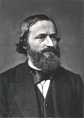
Gustav Robert Kirchhoff was born in what was then called Konigsberg, Prussia (now Kaliningrad, Russia) in 1824. While still enrolled at the Albertus University in that city, he took the results on electric currents developed by Georg Ohm and applied them to electrical circuits with multiple loops. This required a high level of mathematical skills. Along with Robert Bunsen (inventor of the burner), he used the light emitted by various salts and other substances to characterize their composition, known as spectroscopy. This work allowed him to identify elements existing on the surface of the Sun. Along with this, he also developed a universal law about the radiation emitted and absorbed by objects, which later was a key part in Max Planck’s development of early ideas in quantum mechanics.
Before we start on Kirchhoff’s rules, we need to define a couple of terms:
Branch: A branch is a line of circuit elements in wires, where if you pass through one of the elements or wires on the branch, you pass through all of them.
Junction: A junction is where three or more branches meet.
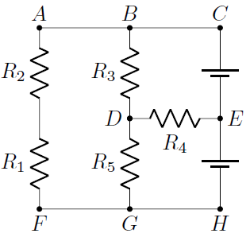
Notice that since junctions are locations were branches meet, if you are on a path, and pass through a junction, you are now on a different branch! For example, in the circuit diagram above, moving from \(C \to E \to H\), you pass from the branch \(BCE\) to the branch \(EHG\) as you move through the junction \(E\).
Problem: In the example circuit above,
Which letters correspond to junctions? Answer: \(B, D, E, G\)
Which branch has two resistors on it? Answer: the branch \(BAFG\)
With the terminology just introduced, we can now talk about Kirchhoff’s rules. The first rule is the junction rule:
The current flowing into a junction must equal the current flowing out.
\[ \sum I_{in} = \sum I_{out} \]
This is nothing but conservation of charge! The charges moving in the electric currents of a circuit cannot appear or disappear, so what goes in must come out.
Problem: What is the value of the unknown current \(I\)? Answer: 6.00 A
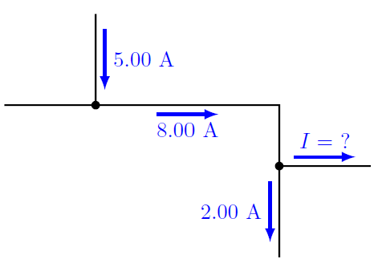
The second rule takes a little bit of explanation beforehand. Remember that voltage is a change in electric potential across a circuit device. Because it is a change, one side of the device will have a higher electric potential than the other. Think in terms of waterfalls for the hydraulic analogy: there is a “high” end (higher \(U_g\)) and a “low” end (lower \(U_g\)). Just as water flows from the high \(U_g\) side to the low \(U_g\) side, so too will conventional current flow from high electric potential to low.
In addition, we must have conservation of energy. If water moves downward as it travels over a waterfall, then goes back to its original height because of a pump and pipe, then the decrease of gravitational potential energy from the waterfall must be matched by the increase in energy from the pump. In other words, the complete loop for the water – down the waterfall, then up the pipe – must have zero change in \(U_g\). Water cannot gain energy simply by returning to its starting point. The same thing happens with voltage as well, and is summed up in the loop rule:
The sum of all voltage differences around any closed loop in a circuit is zero.
$\(\sum V_i = 0\)$ for a closed loop
How do I “make a loop”? Notice that the loop is a mathematical construction, and has nothing to do with the physical current in the circuit. You can choose the loop to go any way you want – sometimes with the current, sometimes against it – but the loop must eventually return to its starting point. Taking the same loop, but reversing its direction, still gives you the same answer.
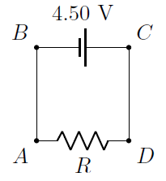
As a simple example, suppose we have the circuit shown above, with one battery and one resistor. We can use the loop rule to find the voltage difference across the resistor, given the known battery voltage. Hopefully, it is easy to see that the resistor voltage is 4.50 V, with the high voltage end on the right side. In particular, if we make a loop that starts at \(A\) and goes counterclockwise, then:
There is no circuit element on \(AB\), so there is no change in voltage.
Along \(BC\), we move from the short line to the long line, so this is an increase in voltage \(V_{batt} = +4.50\) V (remember the discussion above about the symbol for a battery).
Again, no change in voltage along \(CD\).
There is a voltage \(V_R\) across the resistor, moving from \(D\) to \(A\). We are back at the starting point, so we are done with the loop. This gives the equation $\( V_{batt} + V_R = 0 \)\( Thus, \)V_R = -4.50\( V. In other words, there is a decrease of 4.50 V as we move from \)D\( to \)A\(. This means \)D$ is the high voltage end.
In Lesson 32, I will give some rules that help write down the equations coming from the junction loop more systematically.
As a side note, interestingly enough, Kirchhoff’s rules come up in the mathematical problem of “squaring the square” – covering a square with integer sides with several squares with integer sides. An example of a squared square is shown below.
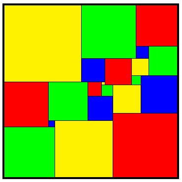
The video linked in the following cell goes into some detail about this. It also mentions how this problem done just for fun led to graph theory, which is now used to study transportation problems, the interaction of genes in the human body, and the outbreaks of pandemics such as COVID-19.
from IPython.display import YouTubeVideo
YouTubeVideo('NoRjwZomUK0', width = 600, height = 400, mute = 1)
Challenge: Using the graph drawing method outlined in the video from the previous cell, prove that a squared square arises when Kirchhoff’s laws are satisified on the equivalent circuit. In particular, answer the following questions:
The Kirchhoff junction rule is equivalent to what geometric fact about the squares inside the squared square?
The Kirchhoff loop rule is equivalent to what other geometric fact?
Series and parallel¶
You have probably heard the terms “series” and “parallel” when referring to electric circuits. The difference between series and parallel depends on how you pass through the circuit elements involved. Remember that for a circuit to function, an electric field has been established in the circuit, which gives a direction of current flow through the circuit. Imagine that you are moving through the circuit along this flow, much like an electron. Two or more circuit elements are in series if, when you pass through one of them, you have to pass through all of them – all of the elements on the same branch are in series. On the other hand, two or more devices are in parallel if you pass only through one of them, and none of the others. Examples of this are shown in the figure below, with the current moving in the directions shown.
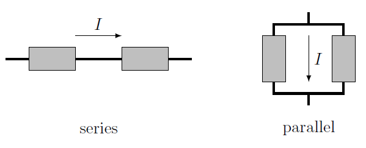
In series, if you pass through one, you pass through all; this means that the current is the same for all devices in series. This is an application of the junction rule – since there are no junctions if you stay on the same branch, then all of the currents are the same. The voltages simply add up to give the total voltage of all the devices; think of this as a piece of a closed loop.
It may be helpful to think of these definitions in terms of the hydraulic analogy. Imagine you are floating on an inner tube along a river. When you are moving on a part of the river where no other rivers or streams connect, then the amount of water current remains constant. However, you may encounter rapids that drop you down in altitude. Your total change in altitude will be the sum of the individual changes from each set of rapids.
Series: $\(I_{total} = I_1 = I_2 = I_3 = \cdots \qquad V_{total} = V_1 + V_2 + V_3 + \cdots\)$
On the other hand, if you have circuit elements in parallel, the currents add up to the total; the original current is split between the devices. Note this split is not usually equal. For example, if two resistors are in parallel, there will be a greater current through the resistor with the lower resistance, and less through the higher resistance device.

Let’s go back to the hydraulic analogy. At Niagara Falls, there are actually three separate waterfalls that descend the same cliff. Starting in 1901, going over one of these, Horseshoe Falls, in a barrel became a thing. Whatever method you use to do this, however, you can only go over one of the three falls – they are all in parallel. This means they have the same difference in height, and therefore you experience the same change in \(U_g\) as you go over the falls. The total current is the sum of the water flows for each of the three individual waterfalls.
Parallel: $\(I_{total} = I_1 + I_2 + I_3 + \cdots \qquad V_{total} = V_1 = V_2 = V_3 = \cdots\)$
Problem: You are given the portion of a circuit shown in the figure below, along with the currents through, and the voltages across, some of the elements. Find the remaining currents and voltages for the three devices, then find the power emitted by each element. Answers: \(I_1 = 2.00\) A, \(I_2 = 1.50\) A, \(V_3 = 1.00\) V, \(P_1 = 4.50\) W, \(P_2 = 1.88\) W, \(P_3 = 1.50\) W
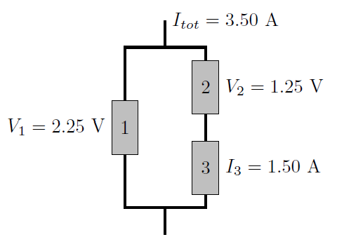
Problem: You are given the portion of a circuit shown in the figure below, along with the currents through, and the voltages across, some of the elements. Find the remaining currents and voltages for the three devices, then find the power emitted by each element. Answers: \(I_1 = 3.50\) A, \(I_2 = 2.00\) A, \(V_3 = 1.25\) V, \(P_1 = 7.88\) W, \(P_2 = 2.50\) W, \(P_3 = 1.88\) W
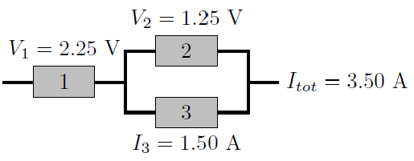
In the next lesson, the loop and junction rules will help us solve for the currents, voltages, and powers for resistors in a circuit.
Summary¶
We have now gone through the basic concepts you will need to understand electric circuits. In particular, we have defined electric current and voltage, as well as the power of a circuit element. We stated Ohm’s law, and introduced two circuit devices: the battery and the resistor. We will see their compatriot – the capacitor – in Lesson 33. Finally, we stated Kirchhoff’s loop and junction rules, and used them to describe elements in series and parallel. In Lesson 32, we will revisit the loop and junction rules, and derive equations giving relations between the various circuit elements. However, before then in Lesson 31, we will look at simpler types of circuits made up of batteries and resistors that can be grouped together either in series or in parallel (or some combination).
After this lesson, you should be able to:
Define circuit elements in series, and in parallel.
Describe the electric properties of circuit elements in series, or in parallel.
Find the voltage across, current through, power emitted by, or resistor of, a resistor.